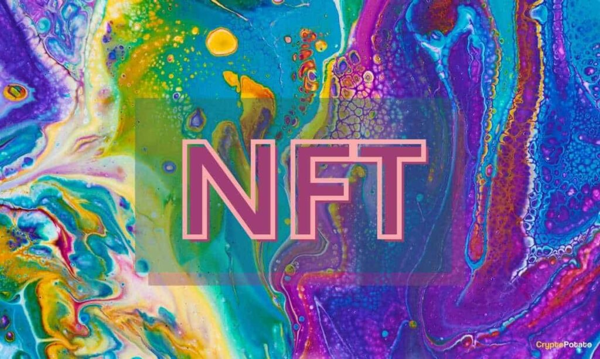
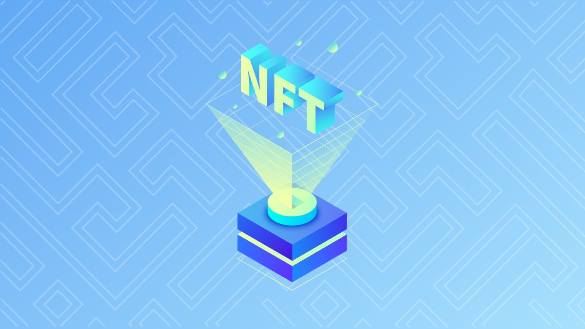

|
¿Qué es la pagina de Chains? |
¿Qué es el block-chain? |
¿Qué son las Cryptomonedas? |
¿Qué son los NFTs? |
blog | Tienda |
|
¿Qué es la pagina de Chains? |
¿Qué es el block-chain? |
¿Qué son las Cryptomonedas? |
¿Qué son los NFTs? |
blog | Tienda |
¿Qué son los NFT? |
|  Las siglas de NFT significan Non -Fungible Token, un token no fungible. Los tokens son unidades de valor que se le asignan a un modelo de negocio, como por ejemplo el de las criptomonedas. Y es que los NFT tienen una relación estrecha con las criptomonedas, por lo menos tecnológicamente, aunque son opuestos, ya que un Bitcoin es un bien fungible, y un NFT es un bien no fungible, pero en esencia, son como las dos caras de una moneda tecnológica. Para que lo entiendas bien, podemos pensar en las criptomonedas como una reserva de valor, algo parecido al oro. Puedes comprar y vender oro, y cuando el número de compradores aumenta el precio sube, para bajar cuando este número de compradores disminuye. Es un comportamiento igual al de las criptomonedas. |
¿Cómo funcionan? |
|  Los NFT funcionan a través de la tecnología blockchain o de cadena de bloques. Es la misma tecnología de las criptomonedas, que funcionan mediante una red de ordenadores descentralizada, con bloques o nodos enlazados y asegurados usando criptografía. Cada bloque enlaza a un bloque previo,así como una fecha y datos de transacciones, y por diseño son resistentes a la modificación de datos. A los NFT, se les asigna una especie de certificado digital de autenticidad, una serie de metadatos que no se van a poder modificar. En estos metadatos se garantiza su autenticidad, se registra el valor de partida y todas las adquisiciones o transacciones que se hayan hecho, y también a su autor. Por lo general, la mayoría de "tokens" o NFT suelen estar basados en los estándares de la red Ethereum y de su cadena de bloques. Gracias a utilizar una tecnología conocida y popular, es sencillo operar con ellos para comprarlos y venderlos utilizando determinados monederos que también trabajan con Ethereum. Sin embargo, estamos hablando de obras únicas, por lo que no hay una compraventa activa como en las monedas digitales. |